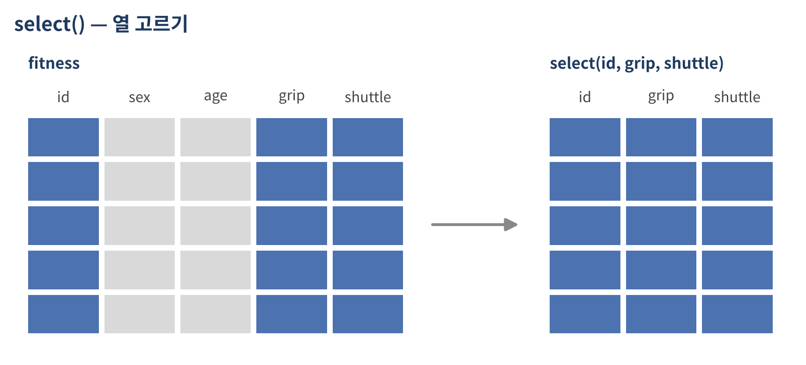
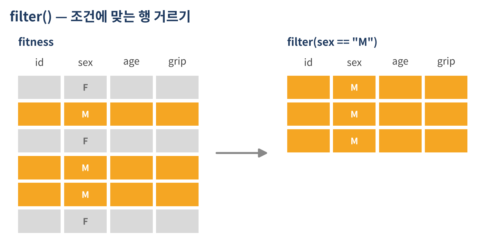
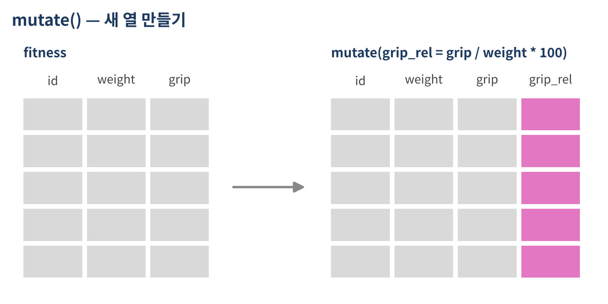

dplyr 패키지 — select · filter · mutate · arrange
같은 작업을 dplyr로 쓰면
fit$를 반복하지 않음| 동사 | 하는 일 | base R |
|---|---|---|
select() |
열 고르기 | df[, c("a", "b")] |
filter() |
행 거르기 | df[df$a > 1, ] |
mutate() |
열 만들기 · 바꾸기 | df$new <- ... |
arrange() |
정렬 | df[order(df$a), ] |
group_by() + summarize() |
집단별 요약 | tapply(), aggregate() |
*_join() |
데이터 결합 | merge() |
glimpse() — 열 기준으로 훑어보기Rows: 30
Columns: 17
$ id <chr> "A01", "A02", "A03", "A04", "A05", "A06", "A07", "A08", "A09", "A10", "A11", "…
$ stage <chr> "성인", "성인", "성인", "성인", "성인", "성인", "성인", "성인", "성인", "성인"…
$ sex <chr> "M", "F", "M", "F", "M", "F", "M", "F", "M", "F", "F", "M", "M", "F", "F", "M"…
$ age <dbl> 50, 59, 57, 47, 51, 48, 36, 31, 46, 45, 33, NA, 25, 28, 44, 61, NA, 48, 34, 46…
$ center <chr> "가람", "누리", "다온", "라온", "가람", "누리", "다온", "라온", "가람", "누리"…
$ region <chr> "서울", "경기", "부산", "대전", "서울", "경기", "부산", "대전", "서울", "경기"…
$ exercise <chr> "주 1~2회", "주 1회 미만", "주 1~2회", "주 1회 미만", "주 3회 이상", "주 1~2회…
$ height <dbl> 167.7, 155.3, 173.9, 165.3, 163.7, 163.4, 178.4, 158.4, 170.3, 161.7, 159.1, 1…
$ weight <dbl> 70.5, 56.6, 71.8, 53.0, 79.0, 56.9, 84.7, 53.0, 84.5, 47.8, 54.6, 77.5, 69.9, …
$ fat_pct <dbl> 21.1, 32.9, 16.3, 32.9, 19.1, 32.9, 19.0, 26.6, 24.1, 29.2, 29.7, 25.6, 28.0, …
$ grip <dbl> 42.1, 21.7, 41.4, 25.9, 45.2, 29.1, 41.9, 34.0, 43.2, 21.8, 30.6, 38.7, 40.9, …
$ situp <dbl> 38, 20, 34, 18, 52, 21, 41, 34, 38, 14, 30, 28, 25, 28, 25, 25, 19, 22, 50, 37…
$ sit_reach <dbl> 4.4, 5.2, 7.9, 10.6, 14.2, 13.6, -0.2, 15.6, 6.1, 10.4, 15.7, -3.4, 9.0, 12.0,…
$ shuttle <dbl> 34, 13, 32, 17, 47, 20, 43, 41, 47, 24, 37, 26, 42, 26, NA, 19, 19, 23, 55, 55…
$ chair_stand <dbl> NA, NA, NA, NA, NA, NA, NA, NA, NA, NA, NA, NA, NA, NA, NA, NA, NA, NA, NA, NA…
$ walk_2min <dbl> NA, NA, NA, NA, NA, NA, NA, NA, NA, NA, NA, NA, NA, NA, NA, NA, NA, NA, NA, NA…
$ grade <chr> "4등급", "2등급", "3등급", "5등급", "1등급", "3등급", "5등급", "1등급", "2등급…str()의 dplyr 버전. 열이 많은 데이터에서 특히 편함
%>%[1] 35.06667
[1] 35.06667
[1] 35.1
[1] 35.1x %>% f(y) 는 f(x, y) 와 같음Ctrl + Shift + M (Mac: Cmd + Shift + M)# A tibble: 30 × 17
id stage sex age center region exercise height weight fat_pct grip situp sit_reach shuttle
<chr> <chr> <chr> <dbl> <chr> <chr> <chr> <dbl> <dbl> <dbl> <dbl> <dbl> <dbl> <dbl>
1 A01 성인 M 50 가람 서울 주 1~2회 167.7 70.5 21.1 42.1 38 4.4 34
2 A02 성인 F 59 누리 경기 주 1회 … 155.3 56.6 32.9 21.7 20 5.2 13
3 A03 성인 M 57 다온 부산 주 1~2회 173.9 71.8 16.3 41.4 34 7.9 32
4 A04 성인 F 47 라온 대전 주 1회 … 165.3 53 32.9 25.9 18 10.6 17
5 A05 성인 M 51 가람 서울 주 3회 … 163.7 79 19.1 45.2 52 14.2 47
6 A06 성인 F 48 누리 경기 주 1~2회 163.4 56.9 32.9 29.1 21 13.6 20
# ℹ 24 more rows
# ℹ 3 more variables: chair_stand <dbl>, walk_2min <dbl>, grade <chr># A tibble: 22 × 17
id stage sex age center region exercise height weight fat_pct grip situp sit_reach shuttle
<chr> <chr> <chr> <dbl> <chr> <chr> <chr> <dbl> <dbl> <dbl> <dbl> <dbl> <dbl> <dbl>
1 A01 성인 M 50 가람 서울 주 1~2회 167.7 70.5 21.1 42.1 38 4.4 34
2 A02 성인 F 59 누리 경기 주 1회 … 155.3 56.6 32.9 21.7 20 5.2 13
3 A03 성인 M 57 다온 부산 주 1~2회 173.9 71.8 16.3 41.4 34 7.9 32
4 A04 성인 F 47 라온 대전 주 1회 … 165.3 53 32.9 25.9 18 10.6 17
5 A05 성인 M 51 가람 서울 주 3회 … 163.7 79 19.1 45.2 52 14.2 47
6 A06 성인 F 48 누리 경기 주 1~2회 163.4 56.9 32.9 29.1 21 13.6 20
# ℹ 16 more rows
# ℹ 3 more variables: chair_stand <dbl>, walk_2min <dbl>, grade <chr># A tibble: 22 × 3
id age shuttle
<chr> <dbl> <dbl>
1 A19 34 55
2 A20 46 55
3 A05 51 47
4 A09 46 47
5 A07 36 43
6 A13 25 42
# ℹ 16 more rows한 줄 추가할 때마다 실행해서 결과를 확인하는 방식으로 작성
%>% 와 |>%>% |
|> |
|
|---|---|---|
| 출처 | magrittr 패키지 (dplyr와 함께 불러와짐) | R 4.1 이상 기본 기능 |
| 사용 | x %>% f() |
x |> f() |
파이프 줄바꿈
%>%는 줄 끝에 둠. 줄 맨 앞에 두면 앞 줄에서 명령이 끝난 것으로 인식되어 오류가 남
select() — 열 고르기select()
# A tibble: 30 × 3
id grip sit_reach
<chr> <dbl> <dbl>
1 A01 42.1 4.4
2 A02 21.7 5.2
3 A03 41.4 7.9
4 A04 25.9 10.6
5 A05 45.2 14.2
6 A06 29.1 13.6
# ℹ 24 more rows# A tibble: 30 × 14
id stage sex age height weight fat_pct grip situp sit_re…¹ shuttle chair_…² walk_2…³ grade
<chr> <chr> <chr> <dbl> <dbl> <dbl> <dbl> <dbl> <dbl> <dbl> <dbl> <dbl> <dbl> <chr>
1 A01 성인 M 50 167.7 70.5 21.1 42.1 38 4.4 34 NA NA 4등급
2 A02 성인 F 59 155.3 56.6 32.9 21.7 20 5.2 13 NA NA 2등급
3 A03 성인 M 57 173.9 71.8 16.3 41.4 34 7.9 32 NA NA 3등급
4 A04 성인 F 47 165.3 53 32.9 25.9 18 10.6 17 NA NA 5등급
5 A05 성인 M 51 163.7 79 19.1 45.2 52 14.2 47 NA NA 1등급
6 A06 성인 F 48 163.4 56.9 32.9 29.1 21 13.6 20 NA NA 3등급
# ℹ 24 more rows
# ℹ abbreviated names: ¹sit_reach, ²chair_stand, ³walk_2min# A tibble: 30 × 17
grade stage id sex age center region exercise height weight fat_pct grip situp sit_re…¹
<chr> <chr> <chr> <chr> <dbl> <chr> <chr> <chr> <dbl> <dbl> <dbl> <dbl> <dbl> <dbl>
1 4등급 성인 A01 M 50 가람 서울 주 1~2회 167.7 70.5 21.1 42.1 38 4.4
2 2등급 성인 A02 F 59 누리 경기 주 1회 미만 155.3 56.6 32.9 21.7 20 5.2
3 3등급 성인 A03 M 57 다온 부산 주 1~2회 173.9 71.8 16.3 41.4 34 7.9
4 5등급 성인 A04 F 47 라온 대전 주 1회 미만 165.3 53 32.9 25.9 18 10.6
5 1등급 성인 A05 M 51 가람 서울 주 3회 이상 163.7 79 19.1 45.2 52 14.2
6 3등급 성인 A06 F 48 누리 경기 주 1~2회 163.4 56.9 32.9 29.1 21 13.6
# ℹ 24 more rows
# ℹ abbreviated name: ¹sit_reach
# ℹ 3 more variables: shuttle <dbl>, chair_stand <dbl>, walk_2min <dbl># A tibble: 30 × 2
situp sit_reach
<dbl> <dbl>
1 38 4.4
2 20 5.2
3 34 7.9
4 18 10.6
5 52 14.2
6 21 13.6
# ℹ 24 more rows
# A tibble: 30 × 5
stage sex situp sit_reach shuttle
<chr> <chr> <dbl> <dbl> <dbl>
1 성인 M 38 4.4 34
2 성인 F 20 5.2 13
3 성인 M 34 7.9 32
4 성인 F 18 10.6 17
5 성인 M 52 14.2 47
6 성인 F 21 13.6 20
# ℹ 24 more rows
# A tibble: 30 × 7
id stage sex center region exercise grade
<chr> <chr> <chr> <chr> <chr> <chr> <chr>
1 A01 성인 M 가람 서울 주 1~2회 4등급
2 A02 성인 F 누리 경기 주 1회 미… 2등급
3 A03 성인 M 다온 부산 주 1~2회 3등급
4 A04 성인 F 라온 대전 주 1회 미… 5등급
5 A05 성인 M 가람 서울 주 3회 이… 1등급
6 A06 성인 F 누리 경기 주 1~2회 3등급
# ℹ 24 more rowsrename() · relocate() · pull()fit %>% rename(fat = fat_pct, flex = sit_reach)
fit %>% relocate(grade, .after = id)
fit %>% pull(grip) %>% mean(na.rm = TRUE)# A tibble: 30 × 17
id stage sex age center region exercise height weight fat grip situp flex shuttle
<chr> <chr> <chr> <dbl> <chr> <chr> <chr> <dbl> <dbl> <dbl> <dbl> <dbl> <dbl> <dbl>
1 A01 성인 M 50 가람 서울 주 1~2회 167.7 70.5 21.1 42.1 38 4.4 34
2 A02 성인 F 59 누리 경기 주 1회 미만 155.3 56.6 32.9 21.7 20 5.2 13
3 A03 성인 M 57 다온 부산 주 1~2회 173.9 71.8 16.3 41.4 34 7.9 32
4 A04 성인 F 47 라온 대전 주 1회 미만 165.3 53 32.9 25.9 18 10.6 17
5 A05 성인 M 51 가람 서울 주 3회 이상 163.7 79 19.1 45.2 52 14.2 47
6 A06 성인 F 48 누리 경기 주 1~2회 163.4 56.9 32.9 29.1 21 13.6 20
# ℹ 24 more rows
# ℹ 3 more variables: chair_stand <dbl>, walk_2min <dbl>, grade <chr>
# A tibble: 30 × 17
id grade stage sex age center region exercise height weight fat_pct grip situp sit_re…¹
<chr> <chr> <chr> <chr> <dbl> <chr> <chr> <chr> <dbl> <dbl> <dbl> <dbl> <dbl> <dbl>
1 A01 4등급 성인 M 50 가람 서울 주 1~2회 167.7 70.5 21.1 42.1 38 4.4
2 A02 2등급 성인 F 59 누리 경기 주 1회 미만 155.3 56.6 32.9 21.7 20 5.2
3 A03 3등급 성인 M 57 다온 부산 주 1~2회 173.9 71.8 16.3 41.4 34 7.9
4 A04 5등급 성인 F 47 라온 대전 주 1회 미만 165.3 53 32.9 25.9 18 10.6
5 A05 1등급 성인 M 51 가람 서울 주 3회 이상 163.7 79 19.1 45.2 52 14.2
6 A06 3등급 성인 F 48 누리 경기 주 1~2회 163.4 56.9 32.9 29.1 21 13.6
# ℹ 24 more rows
# ℹ abbreviated name: ¹sit_reach
# ℹ 3 more variables: shuttle <dbl>, chair_stand <dbl>, walk_2min <dbl>
[1] 30.78929filter() — 행 거르기filter()
# A tibble: 4 × 17
id stage sex age center region exercise height weight fat_pct grip situp sit_reach shuttle
<chr> <chr> <chr> <dbl> <chr> <chr> <chr> <dbl> <dbl> <dbl> <dbl> <dbl> <dbl> <dbl>
1 A01 성인 M 50 가람 서울 주 1~2회 167.7 70.5 21.1 42.1 38 4.4 34
2 A05 성인 M 51 가람 서울 주 3회 … 163.7 79 19.1 45.2 52 14.2 47
3 A09 성인 M 46 가람 서울 주 1~2회 170.3 84.5 24.1 43.2 38 6.1 47
4 A19 성인 M 34 다온 부산 주 3회 … 178.8 70.8 20 49.5 50 15 55
# ℹ 3 more variables: chair_stand <dbl>, walk_2min <dbl>, grade <chr># A tibble: 4 × 17
id stage sex age center region exercise height weight fat_pct grip situp sit_re…¹ shuttle
<chr> <chr> <chr> <dbl> <chr> <chr> <chr> <dbl> <dbl> <dbl> <dbl> <dbl> <dbl> <dbl>
1 E05 어르신 F 66 다온 부산 주 3회 … 153.9 46.2 31.7 24.3 NA 13.5 NA
2 E06 어르신 F 79 라온 대전 주 3회 … 152 63.7 30.8 19.3 NA 2.7 NA
3 E07 어르신 F 76 가람 서울 주 1~2회 150.7 53.5 32.6 23.6 NA 12.3 NA
4 E08 어르신 F 72 누리 경기 주 1~2회 152.3 52.2 29 22.1 NA 15 NA
# ℹ abbreviated name: ¹sit_reach
# ℹ 3 more variables: chair_stand <dbl>, walk_2min <dbl>, grade <chr># A tibble: 6 × 17
id stage sex age center region exercise height weight fat_pct grip situp sit_re…¹ shuttle
<chr> <chr> <chr> <dbl> <chr> <chr> <chr> <dbl> <dbl> <dbl> <dbl> <dbl> <dbl> <dbl>
1 A13 성인 M 25 가람 서울 주 1회 … 177.5 69.9 28 40.9 25 9 42
2 A14 성인 F 28 누리 경기 주 3회 … 155.1 65 28.2 NA 28 12 26
3 A21 성인 F 26 가람 서울 <NA> 149.5 62.1 33.9 23.1 22 6.7 11
4 E04 어르신 M 79 누리 경기 주 1~2회 168.6 62.8 30.3 25.1 NA -1.7 NA
5 E06 어르신 F 79 라온 대전 주 3회 … 152 63.7 30.8 19.3 NA 2.7 NA
6 E07 어르신 F 76 가람 서울 주 1~2회 150.7 53.5 32.6 23.6 NA 12.3 NA
# ℹ abbreviated name: ¹sit_reach
# ℹ 3 more variables: chair_stand <dbl>, walk_2min <dbl>, grade <chr># A tibble: 12 × 17
id stage sex age center region exercise height weight fat_pct grip situp sit_reach shuttle
<chr> <chr> <chr> <dbl> <chr> <chr> <chr> <dbl> <dbl> <dbl> <dbl> <dbl> <dbl> <dbl>
1 A02 성인 F 59 누리 경기 주 1회 … 155.3 56.6 32.9 21.7 20 5.2 13
2 A05 성인 M 51 가람 서울 주 3회 … 163.7 79 19.1 45.2 52 14.2 47
3 A08 성인 F 31 라온 대전 주 3회 … 158.4 53 26.6 34 34 15.6 41
4 A09 성인 M 46 가람 서울 주 1~2회 170.3 84.5 24.1 43.2 38 6.1 47
5 A11 성인 F 33 다온 부산 주 1~2회 159.1 54.6 29.7 30.6 30 15.7 37
6 A14 성인 F 28 누리 경기 주 3회 … 155.1 65 28.2 NA 28 12 26
# ℹ 6 more rows
# ℹ 3 more variables: chair_stand <dbl>, walk_2min <dbl>, grade <chr># A tibble: 7 × 17
id stage sex age center region exercise height weight fat_pct grip situp sit_reach shuttle
<chr> <chr> <chr> <dbl> <chr> <chr> <chr> <dbl> <dbl> <dbl> <dbl> <dbl> <dbl> <dbl>
1 A04 성인 F 47 라온 대전 주 1회 … 165.3 53 32.9 25.9 18 10.6 17
2 A06 성인 F 48 누리 경기 주 1~2회 163.4 56.9 32.9 29.1 21 13.6 20
3 A09 성인 M 46 가람 서울 주 1~2회 170.3 84.5 24.1 43.2 38 6.1 47
4 A10 성인 F 45 누리 경기 주 1회 … 161.7 47.8 29.2 21.8 14 10.4 24
5 A15 성인 F 44 다온 부산 주 1~2회 156.5 54.7 28.9 26.6 25 12.5 NA
6 A18 성인 <NA> 48 누리 경기 주 1~2회 157.5 62.3 31.2 24.3 22 16.7 23
# ℹ 1 more row
# ℹ 3 more variables: chair_stand <dbl>, walk_2min <dbl>, grade <chr># A tibble: 14 × 17
id stage sex age center region exercise height weight fat_pct grip situp sit_reach shuttle
<chr> <chr> <chr> <dbl> <chr> <chr> <chr> <dbl> <dbl> <dbl> <dbl> <dbl> <dbl> <dbl>
1 A03 성인 M 57 다온 부산 주 1~2회 173.9 71.8 16.3 41.4 34 7.9 32
2 A04 성인 F 47 라온 대전 주 1회 … 165.3 53 32.9 25.9 18 10.6 17
3 A07 성인 M 36 다온 부산 주 1~2회 178.4 84.7 19 41.9 41 -0.2 43
4 A08 성인 F 31 라온 대전 주 3회 … 158.4 53 26.6 34 34 15.6 41
5 A11 성인 F 33 다온 부산 주 1~2회 159.1 54.6 29.7 30.6 30 15.7 37
6 A12 성인 M NA 라온 대전 주 1회 … 178.8 77.5 25.6 38.7 28 -3.4 26
# ℹ 8 more rows
# ℹ 3 more variables: chair_stand <dbl>, walk_2min <dbl>, grade <chr>Error in `filter()`:
! We detected a named input.
ℹ This usually means that you've used `=` instead of `==`.
ℹ Did you mean `sex == "F"`?비교는 ==. = 하나는 인자 지정
공백 하나만 달라도 다른 값
fit %>% filter(shuttle < 20) %>% select(id, stage, shuttle)
fit %>% filter(shuttle < 20 | is.na(shuttle)) %>% select(id, stage, shuttle)# A tibble: 6 × 3
id stage shuttle
<chr> <chr> <dbl>
1 A02 성인 13
2 A04 성인 17
3 A16 성인 19
4 A17 성인 19
5 A21 성인 11
6 A22 성인 8
# A tibble: 15 × 3
id stage shuttle
<chr> <chr> <dbl>
1 A02 성인 13
2 A04 성인 17
3 A15 성인 NA
4 A16 성인 19
5 A17 성인 19
6 A21 성인 11
# ℹ 9 more rows조건 결과가 NA인 행은 제외됨
slice_*()# A tibble: 3 × 17
id stage sex age center region exercise height weight fat_pct grip situp sit_reach shuttle
<chr> <chr> <chr> <dbl> <chr> <chr> <chr> <dbl> <dbl> <dbl> <dbl> <dbl> <dbl> <dbl>
1 A01 성인 M 50 가람 서울 주 1~2회 167.7 70.5 21.1 42.1 38 4.4 34
2 A02 성인 F 59 누리 경기 주 1회 … 155.3 56.6 32.9 21.7 20 5.2 13
3 A03 성인 M 57 다온 부산 주 1~2회 173.9 71.8 16.3 41.4 34 7.9 32
# ℹ 3 more variables: chair_stand <dbl>, walk_2min <dbl>, grade <chr># A tibble: 4 × 17
id stage sex age center region exercise height weight fat_pct grip situp sit_reach shuttle
<chr> <chr> <chr> <dbl> <chr> <chr> <chr> <dbl> <dbl> <dbl> <dbl> <dbl> <dbl> <dbl>
1 A19 성인 M 34 다온 부산 주 3회 … 178.8 70.8 20 49.5 50 15 55
2 A20 성인 M 46 라온 대전 주 1~2회 176 80.1 24.6 NA 37 3.4 55
3 A05 성인 M 51 가람 서울 주 3회 … 163.7 79 19.1 45.2 52 14.2 47
4 A09 성인 M 46 가람 서울 주 1~2회 170.3 84.5 24.1 43.2 38 6.1 47
# ℹ 3 more variables: chair_stand <dbl>, walk_2min <dbl>, grade <chr># A tibble: 3 × 17
id stage sex age center region exercise height weight fat_pct grip situp sit_reach shuttle
<chr> <chr> <chr> <dbl> <chr> <chr> <chr> <dbl> <dbl> <dbl> <dbl> <dbl> <dbl> <dbl>
1 A03 성인 M 57 다온 부산 주 1~2회 173.9 71.8 16.3 41.4 34 7.9 32
2 A07 성인 M 36 다온 부산 주 1~2회 178.4 84.7 19 41.9 41 -0.2 43
3 A05 성인 M 51 가람 서울 주 3회 … 163.7 79 19.1 45.2 52 14.2 47
# ℹ 3 more variables: chair_stand <dbl>, walk_2min <dbl>, grade <chr># A tibble: 3 × 17
id stage sex age center region exercise height weight fat_pct grip situp sit_re…¹ shuttle
<chr> <chr> <chr> <dbl> <chr> <chr> <chr> <dbl> <dbl> <dbl> <dbl> <dbl> <dbl> <dbl>
1 A06 성인 F 48 누리 경기 주 1~2회 163.4 56.9 32.9 29.1 21 13.6 20
2 A07 성인 M 36 다온 부산 주 1~2회 178.4 84.7 19 41.9 41 -0.2 43
3 E07 어르신 F 76 가람 서울 주 1~2회 150.7 53.5 32.6 23.6 NA 12.3 NA
# ℹ abbreviated name: ¹sit_reach
# ℹ 3 more variables: chair_stand <dbl>, walk_2min <dbl>, grade <chr>fit 데이터 사용
id, age, grip만 골라서 보기center, region을 빼고 나머지 열만 보기nrow() 사용)id, age, shuttlefit %>% select(id, age, grip)
fit %>% select(-center, -region)
fit %>% filter(grade == "1등급", sex == "F") %>% nrow()
fit %>% filter(age >= 75 | shuttle >= 50) %>% select(id, age, shuttle)
fit %>% filter(stage == "성인", sex == "M") %>% slice_max(grip, n = 3)# A tibble: 30 × 3
id age grip
<chr> <dbl> <dbl>
1 A01 50 42.1
2 A02 59 21.7
3 A03 57 41.4
4 A04 47 25.9
5 A05 51 45.2
6 A06 48 29.1
# ℹ 24 more rows
# A tibble: 30 × 15
id stage sex age exercise height weight fat_pct grip situp sit_reach shuttle chair_st…¹
<chr> <chr> <chr> <dbl> <chr> <dbl> <dbl> <dbl> <dbl> <dbl> <dbl> <dbl> <dbl>
1 A01 성인 M 50 주 1~2회 167.7 70.5 21.1 42.1 38 4.4 34 NA
2 A02 성인 F 59 주 1회 미만 155.3 56.6 32.9 21.7 20 5.2 13 NA
3 A03 성인 M 57 주 1~2회 173.9 71.8 16.3 41.4 34 7.9 32 NA
4 A04 성인 F 47 주 1회 미만 165.3 53 32.9 25.9 18 10.6 17 NA
5 A05 성인 M 51 주 3회 이상 163.7 79 19.1 45.2 52 14.2 47 NA
6 A06 성인 F 48 주 1~2회 163.4 56.9 32.9 29.1 21 13.6 20 NA
# ℹ 24 more rows
# ℹ abbreviated name: ¹chair_stand
# ℹ 2 more variables: walk_2min <dbl>, grade <chr>
[1] 3
# A tibble: 5 × 3
id age shuttle
<chr> <dbl> <dbl>
1 A19 34 55
2 A20 46 55
3 E04 79 NA
4 E06 79 NA
5 E07 76 NA
# A tibble: 3 × 17
id stage sex age center region exercise height weight fat_pct grip situp sit_reach shuttle
<chr> <chr> <chr> <dbl> <chr> <chr> <chr> <dbl> <dbl> <dbl> <dbl> <dbl> <dbl> <dbl>
1 A19 성인 M 34 다온 부산 주 3회 … 178.8 70.8 20 49.5 50 15 55
2 A05 성인 M 51 가람 서울 주 3회 … 163.7 79 19.1 45.2 52 14.2 47
3 A09 성인 M 46 가람 서울 주 1~2회 170.3 84.5 24.1 43.2 38 6.1 47
# ℹ 3 more variables: chair_stand <dbl>, walk_2min <dbl>, grade <chr>mutate() — 열 만들기 · 바꾸기mutate()
# A tibble: 30 × 4
id weight grip grip_rel
<chr> <dbl> <dbl> <dbl>
1 A01 70.5 42.1 59.72
2 A02 56.6 21.7 38.34
3 A03 71.8 41.4 57.66
4 A04 53 25.9 48.87
5 A05 79 45.2 57.22
6 A06 56.9 29.1 51.14
# ℹ 24 more rowsfit %>% mutate(
bmi = weight / (height / 100)^2, # 새 열
bmi = round(bmi, 1), # 방금 만든 열을 바로 다시 사용
grip_rel = round(grip / weight * 100, 1), # 상대악력(%)
age = as.integer(age) # 기존 열 덮어쓰기
) %>%
select(id, height, weight, bmi, grip, grip_rel)# A tibble: 30 × 6
id height weight bmi grip grip_rel
<chr> <dbl> <dbl> <dbl> <dbl> <dbl>
1 A01 167.7 70.5 25.1 42.1 59.7
2 A02 155.3 56.6 23.5 21.7 38.3
3 A03 173.9 71.8 23.7 41.4 57.7
4 A04 165.3 53 19.4 25.9 48.9
5 A05 163.7 79 29.5 45.2 57.2
6 A06 163.4 56.9 21.3 29.1 51.1
# ℹ 24 more rowsif_else()# A tibble: 30 × 5
id bmi obese grade top
<chr> <dbl> <chr> <chr> <dbl>
1 A01 25.07 비만 4등급 0
2 A02 23.47 비만 아님 2등급 1
3 A03 23.74 비만 아님 3등급 0
4 A04 19.40 비만 아님 5등급 0
5 A05 29.48 비만 1등급 1
6 A06 21.31 비만 아님 3등급 0
# ℹ 24 more rowscase_when()조건 ~ 값 을 위에서부터 차례로 검사, 처음 TRUE가 되는 값 사용.default : 어느 조건에도 해당하지 않을 때 (TRUE ~ 값 으로 써도 같음)case_when() 활용 · NA 주의fit %>%
mutate(
bmi = weight / (height / 100)^2,
bmi_grp = case_when(
bmi < 18.5 ~ "저체중",
bmi < 23 ~ "정상",
bmi < 25 ~ "과체중",
.default = "비만"
),
age_grp = case_when(
age < 40 ~ "19~39세",
age < 65 ~ "40~64세",
age >= 65 ~ "65세 이상"
),
age_grp_wrong = case_when(
age < 40 ~ "19~39세",
age < 65 ~ "40~64세",
.default = "65세 이상"
)
) %>%
select(id, age, age_grp, age_grp_wrong, bmi, bmi_grp) %>%
slice(10:15)case_when() 활용 · NA 주의# A tibble: 6 × 6
id age age_grp age_grp_wrong bmi bmi_grp
<chr> <dbl> <chr> <chr> <dbl> <chr>
1 A10 45 40~64세 40~64세 18.28 저체중
2 A11 33 19~39세 19~39세 21.57 정상
3 A12 NA <NA> 65세 이상 24.24 과체중
4 A13 25 19~39세 19~39세 22.19 정상
5 A14 28 19~39세 19~39세 27.02 비만
6 A15 44 40~64세 40~64세 22.33 정상 factor()
저체중 정상 과체중 비만
2 12 4 12 across()across() — 측정 항목 표준화fit %>%
mutate(across(c(grip, sit_reach, fat_pct),
~ (.x - mean(.x, na.rm = TRUE)) / sd(.x, na.rm = TRUE))) %>%
select(id, grip, sit_reach, fat_pct)# A tibble: 30 × 4
id grip sit_reach fat_pct
<chr> <dbl> <dbl> <dbl>
1 A01 1.262 -0.6132 -1.353
2 A02 -1.014 -0.4831 1.006
3 A03 1.184 -0.04392 -2.313
4 A04 -0.5455 0.3952 1.006
5 A05 1.608 0.9808 -1.753
6 A06 -0.1885 0.8832 1.006
# ℹ 24 more rowsarrange() — 정렬arrange()# A tibble: 30 × 17
id stage sex age center region exercise height weight fat_pct grip situp sit_reach shuttle
<chr> <chr> <chr> <dbl> <chr> <chr> <chr> <dbl> <dbl> <dbl> <dbl> <dbl> <dbl> <dbl>
1 A03 성인 M 57 다온 부산 주 1~2회 173.9 71.8 16.3 41.4 34 7.9 32
2 A07 성인 M 36 다온 부산 주 1~2회 178.4 84.7 19 41.9 41 -0.2 43
3 A05 성인 M 51 가람 서울 주 3회 … 163.7 79 19.1 45.2 52 14.2 47
4 A19 성인 M 34 다온 부산 주 3회 … 178.8 70.8 20 49.5 50 15 55
5 A01 성인 M 50 가람 서울 주 1~2회 167.7 70.5 21.1 42.1 38 4.4 34
6 A09 성인 M 46 가람 서울 주 1~2회 170.3 84.5 24.1 43.2 38 6.1 47
# ℹ 24 more rows
# ℹ 3 more variables: chair_stand <dbl>, walk_2min <dbl>, grade <chr># A tibble: 30 × 17
id stage sex age center region exercise height weight fat_pct grip situp sit_re…¹ shuttle
<chr> <chr> <chr> <dbl> <chr> <chr> <chr> <dbl> <dbl> <dbl> <dbl> <dbl> <dbl> <dbl>
1 A17 성인 F NA 가람 서울 주 1회 … 162.3 54.7 31.7 22.2 19 17.2 19
2 A18 성인 <NA> 48 누리 경기 주 1~2회 157.5 62.3 31.2 24.3 22 16.7 23
3 A11 성인 F 33 다온 부산 주 1~2회 159.1 54.6 29.7 30.6 30 15.7 37
4 A08 성인 F 31 라온 대전 주 3회 … 158.4 53 26.6 34 34 15.6 41
5 A19 성인 M 34 다온 부산 주 3회 … 178.8 70.8 20 49.5 50 15 55
6 E08 어르신 F 72 누리 경기 주 1~2회 152.3 52.2 29 22.1 NA 15 NA
# ℹ 24 more rows
# ℹ abbreviated name: ¹sit_reach
# ℹ 3 more variables: chair_stand <dbl>, walk_2min <dbl>, grade <chr># A tibble: 30 × 17
id stage sex age center region exercise height weight fat_pct grip situp sit_reach shuttle
<chr> <chr> <chr> <dbl> <chr> <chr> <chr> <dbl> <dbl> <dbl> <dbl> <dbl> <dbl> <dbl>
1 A19 성인 M 34 다온 부산 주 3회 … 178.8 70.8 20 49.5 50 15 55
2 A05 성인 M 51 가람 서울 주 3회 … 163.7 79 19.1 45.2 52 14.2 47
3 A09 성인 M 46 가람 서울 주 1~2회 170.3 84.5 24.1 43.2 38 6.1 47
4 A01 성인 M 50 가람 서울 주 1~2회 167.7 70.5 21.1 42.1 38 4.4 34
5 A07 성인 M 36 다온 부산 주 1~2회 178.4 84.7 19 41.9 41 -0.2 43
6 A03 성인 M 57 다온 부산 주 1~2회 173.9 71.8 16.3 41.4 34 7.9 32
# ℹ 24 more rows
# ℹ 3 more variables: chair_stand <dbl>, walk_2min <dbl>, grade <chr>2교시 작업을 dplyr로 다시
| 작업 | base R | dplyr |
|---|---|---|
| 열 고르기 | df[, c("a", "b")] |
select(a, b) |
| 열 빼기 | df[, -c(1, 2)] |
select(-a, -b) |
| 행 거르기 | df[which(df$a > 1 & df$b == "x"), ] |
filter(a > 1, b == "x") |
| 앞 몇 행 | df[1:3, ], head(df, 3) |
slice(1:3), slice_head(n = 3) |
| 새 열 | df$new <- df$a * 2 |
mutate(new = a * 2) |
| 조건 값 | ifelse() 중첩 |
if_else(), case_when() |
| 정렬 | df[order(df$a, -df$b), ] |
arrange(a, desc(b)) |
| 이름 변경 | names(df)[...] <- "new" |
rename(new = old) |
| 열 하나 꺼내기 | df$a |
pull(a) |
fitness %>%
filter(age %in% c(-9, 999) | grip %in% c(-1, 999) | shuttle == -1 |
sex == "미상" | exercise == "" | grade == "측정중단") %>%
select(id, sex, age, exercise, grip, shuttle, grade) id sex age exercise grip shuttle grade
1 A12 M -9 주 1회 미만 38.7 26 5등급
2 A14 F 28 주 3회 이상 999.0 26 2등급
3 A15 F 44 주 1~2회 26.6 -1 3등급
4 A17 F 999 주 1회 미만 22.2 19 4등급
5 A18 미상 48 주 1~2회 24.3 23 5등급
6 A20 M 46 주 1~2회 -1.0 55 2등급
7 A21 F 26 23.1 11 6등급
8 E07 F 76 주 1~2회 23.6 NA 측정중단if_else() · na_if() · across()로 정리fit_clean <- fitness %>%
mutate(
age = if_else(age %in% c(-9, 999), NA, age),
across(c(grip, shuttle), ~ if_else(.x %in% c(-1, 999), NA, .x)),
sex = na_if(sex, "미상"),
exercise = na_if(exercise, ""),
grade = na_if(grade, "측정중단")
)
fit_clean %>% summarize(across(everything(), ~ sum(is.na(.x)))) id stage sex age center region exercise height weight fat_pct grip situp sit_reach shuttle
1 0 0 1 2 0 0 1 0 0 0 2 8 0 9
chair_stand walk_2min grade
1 22 22 1analysis <- fitness %>%
mutate(
age = if_else(age %in% c(-9, 999), NA, age),
across(c(grip, shuttle), ~ if_else(.x %in% c(-1, 999), NA, .x)),
sex = na_if(sex, "미상"),
exercise = na_if(exercise, ""),
grade = na_if(grade, "측정중단")
) %>%
filter(!is.na(age), !is.na(grip)) %>%
mutate(
bmi = round(weight / (height / 100)^2, 1),
grip_rel = round(grip / weight * 100, 1),
exercise = factor(exercise, levels = c("주 1회 미만", "주 1~2회", "주 3회 이상")),
grade = factor(grade, levels = paste0(1:6, "등급"))
) %>%
select(id, stage, sex, age, exercise, bmi, grip_rel, sit_reach, grade) %>%
arrange(stage, desc(grip_rel))
analysis id stage sex age exercise bmi grip_rel sit_reach grade
1 A19 성인 M 34 주 3회 이상 22.1 69.9 15.0 1등급
2 A08 성인 F 31 주 3회 이상 21.1 64.2 15.6 1등급
3 A01 성인 M 50 주 1~2회 25.1 59.7 4.4 4등급
4 A13 성인 M 25 주 1회 미만 22.2 58.5 9.0 6등급
5 A03 성인 M 57 주 1~2회 23.7 57.7 7.9 3등급
6 A05 성인 M 51 주 3회 이상 29.5 57.2 14.2 1등급
7 A11 성인 F 33 주 1~2회 21.6 56.0 15.7 1등급
8 A06 성인 F 48 주 1~2회 21.3 51.1 13.6 3등급
9 A09 성인 M 46 주 1~2회 29.1 51.1 6.1 2등급
10 A07 성인 M 36 주 1~2회 26.6 49.5 -0.2 5등급
11 A04 성인 F 47 주 1회 미만 19.4 48.9 10.6 5등급
12 A15 성인 F 44 주 1~2회 22.3 48.6 12.5 3등급
13 A16 성인 M 61 주 1~2회 28.2 45.7 1.8 4등급
14 A10 성인 F 45 주 1회 미만 18.3 45.6 10.4 4등급
15 A18 성인 <NA> 48 주 1~2회 25.1 39.0 16.7 5등급
16 A02 성인 F 59 주 1회 미만 23.5 38.3 5.2 2등급
17 A21 성인 F 26 <NA> 27.8 37.2 6.7 6등급
18 A22 성인 F 55 주 1회 미만 22.7 29.7 3.9 6등급
19 E01 어르신 M 71 주 3회 이상 18.0 59.1 4.1 2등급
20 E05 어르신 F 66 주 3회 이상 19.5 52.6 13.5 1등급
21 E07 어르신 F 76 주 1~2회 23.6 44.1 12.3 <NA>
22 E08 어르신 F 72 주 1~2회 22.5 42.3 15.0 4등급
23 E02 어르신 M 65 주 1~2회 27.3 40.0 1.5 1등급
24 E04 어르신 M 79 주 1~2회 22.1 40.0 -1.7 5등급
25 E03 어르신 M 71 주 1회 미만 29.1 38.8 -0.6 4등급
26 E06 어르신 F 79 주 3회 이상 27.6 30.3 2.7 2등급fit 데이터 사용
weight / (height / 100)^2)와 상대악력(grip / weight * 100) 열을 만들고 id, bmi, grip_rel만 보기flex_grp를 만들기: 앉아윗몸앞으로굽히기(sit_reach) 5cm 미만 “하”, 15cm 미만 “중”, 그 외 “상”flex_grp가 “상”인 측정자를 체지방률이 낮은 순서로 정렬grip, sit_reach, fat_pct 세 열을 반올림해서 정수로 만든 새 데이터 만들기 (across() 사용)good_flex에 저장fit %>%
mutate(bmi = weight / (height / 100)^2, grip_rel = grip / weight * 100) %>%
select(id, bmi, grip_rel)
fit %>%
mutate(flex_grp = case_when(sit_reach < 5 ~ "하",
sit_reach < 15 ~ "중",
.default = "상")) %>%
filter(flex_grp == "상") %>%
arrange(fat_pct)
fit %>%
mutate(across(c(grip, sit_reach, fat_pct), round))
good_flex <- fit %>%
mutate(bmi = weight / (height / 100)^2, grip_rel = grip / weight * 100,
flex_grp = case_when(sit_reach < 5 ~ "하",
sit_reach < 15 ~ "중",
.default = "상")) %>%
filter(flex_grp == "상") %>%
arrange(fat_pct)# A tibble: 30 × 3
id bmi grip_rel
<chr> <dbl> <dbl>
1 A01 25.07 59.72
2 A02 23.47 38.34
3 A03 23.74 57.66
4 A04 19.40 48.87
5 A05 29.48 57.22
6 A06 21.31 51.14
# ℹ 24 more rows
# A tibble: 6 × 18
id stage sex age center region exercise height weight fat_pct grip situp sit_re…¹ shuttle
<chr> <chr> <chr> <dbl> <chr> <chr> <chr> <dbl> <dbl> <dbl> <dbl> <dbl> <dbl> <dbl>
1 A19 성인 M 34 다온 부산 주 3회 … 178.8 70.8 20 49.5 50 15 55
2 A08 성인 F 31 라온 대전 주 3회 … 158.4 53 26.6 34 34 15.6 41
3 E08 어르신 F 72 누리 경기 주 1~2회 152.3 52.2 29 22.1 NA 15 NA
4 A11 성인 F 33 다온 부산 주 1~2회 159.1 54.6 29.7 30.6 30 15.7 37
5 A18 성인 <NA> 48 누리 경기 주 1~2회 157.5 62.3 31.2 24.3 22 16.7 23
6 A17 성인 F NA 가람 서울 주 1회 … 162.3 54.7 31.7 22.2 19 17.2 19
# ℹ abbreviated name: ¹sit_reach
# ℹ 4 more variables: chair_stand <dbl>, walk_2min <dbl>, grade <chr>, flex_grp <chr>
# A tibble: 30 × 17
id stage sex age center region exercise height weight fat_pct grip situp sit_reach shuttle
<chr> <chr> <chr> <dbl> <chr> <chr> <chr> <dbl> <dbl> <dbl> <dbl> <dbl> <dbl> <dbl>
1 A01 성인 M 50 가람 서울 주 1~2회 167.7 70.5 21 42 38 4 34
2 A02 성인 F 59 누리 경기 주 1회 … 155.3 56.6 33 22 20 5 13
3 A03 성인 M 57 다온 부산 주 1~2회 173.9 71.8 16 41 34 8 32
4 A04 성인 F 47 라온 대전 주 1회 … 165.3 53 33 26 18 11 17
5 A05 성인 M 51 가람 서울 주 3회 … 163.7 79 19 45 52 14 47
6 A06 성인 F 48 누리 경기 주 1~2회 163.4 56.9 33 29 21 14 20
# ℹ 24 more rows
# ℹ 3 more variables: chair_stand <dbl>, walk_2min <dbl>, grade <chr>3·4교시 · 데이터프레임 다루기 II